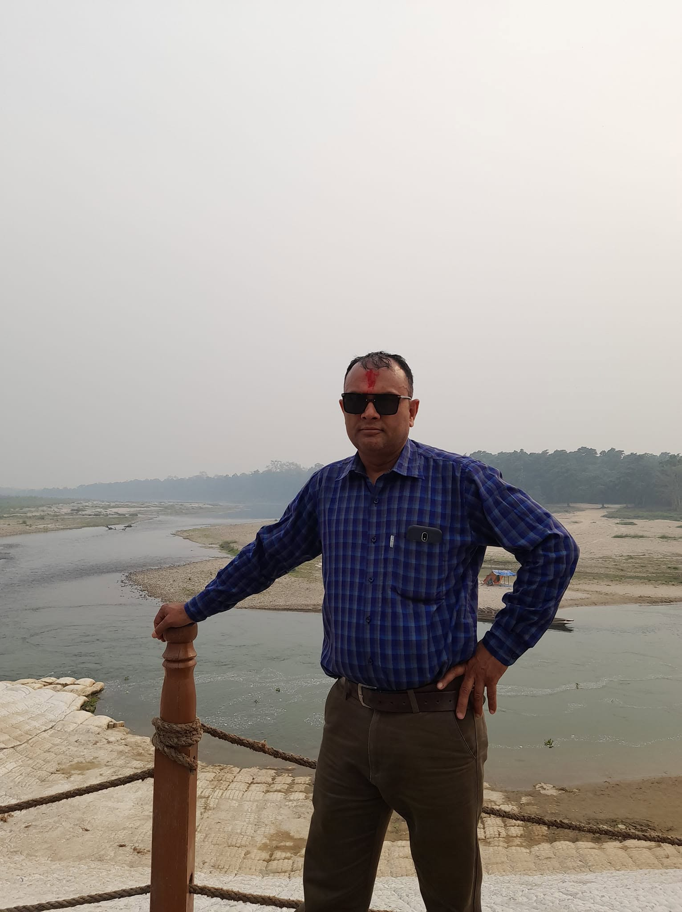

CIVIL
Civil Construction
Practical technical work associated with construction activities, site execution and civil infrastructure.
Netra Prasad Parajuli
Practical experience in civil construction, field supervision, technical drafting, water supply & sanitation activities, and infrastructure-related field work.

A professional profile built around practical technical experience, civil construction activities, supervision, drafting and infrastructure-related work.
Areas of technical knowledge and practical capability relevant to civil and infrastructure work.
Practical involvement in construction-related activities, field execution and technical work.
Monitoring field activities, coordination and practical site responsibilities.
Technical drawing and drafting related to civil engineering and construction activities.
Technical exposure to water supply-related infrastructure and field activities.
Practical technical work related to sanitation and infrastructure activities.
Field-oriented technical work associated with infrastructure development and maintenance.
A career centered around practical technical responsibilities and infrastructure-related work.
Practical responsibilities involving civil construction, field supervision, technical activities, coordination and infrastructure-related work.
Exposure to practical field conditions, construction activities and technical supervision responsibilities.
Technical involvement in activities related to water supply, sanitation and supporting infrastructure work.
Selected areas representing practical technical and infrastructure-related work.
Practical technical work associated with construction activities, site execution and civil infrastructure.
Field-based monitoring, coordination and supervision of technical construction activities.
Technical drawing and documentation supporting civil and infrastructure work.
Technical work associated with water supply, sanitation and infrastructure-related activities.
Academic and professional learning supporting practical technical work.
Technical education relevant to civil construction and infrastructure work.
Practical learning and technical development supporting field responsibilities.